Our Solar System: Planets and Wonders
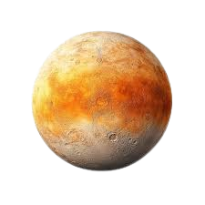
Mercury
Mercury is the closest planet to the Sun, and it has no atmosphere to protect it from the harsh conditions of space.
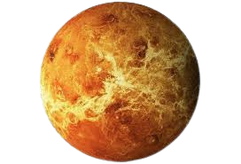
Venus
Venus is often called Earth's "sister planet" due to its similar size and mass, though its surface is extremely hot.
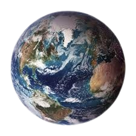
Earth
Earth is the only known planet to support life, with its breathable atmosphere and stable climate.

Mars
Known as the "Red Planet," Mars features the tallest volcano and deepest canyon in the solar system.

Jupiter
Jupiter is the largest planet in the solar system, famous for its Great Red Spot and dozens of moons.
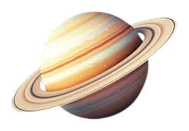
Saturn
Saturn is renowned for its stunning rings, which are made of ice and rock particles.
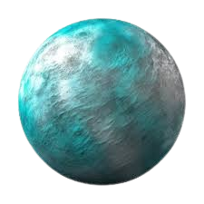
Uranus
Uranus is unique because it rotates on its side and has a striking blue-green hue due to methane in its atmosphere.

Neptune
Neptune is known for its strong winds and deep blue color, caused by methane in its atmosphere.
Other Cosmic Wonders
Black Hole
A black hole is a region of space where gravity is so strong that not even light can escape.
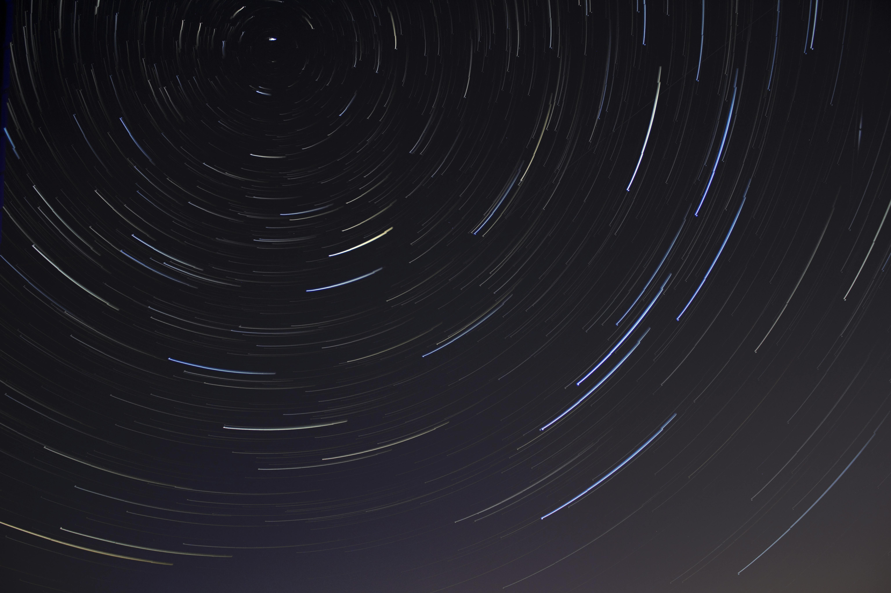
Stars
Stars are massive, luminous balls of gas that emit light due to nuclear fusion occurring in their cores.
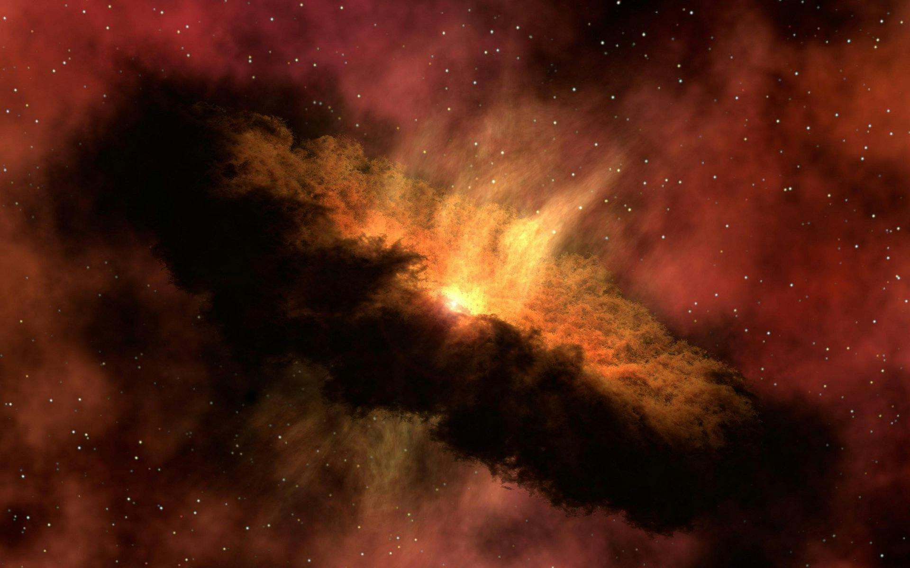
Nebula
Nebulas are vast clouds of gas and dust in space, often acting as stellar nurseries where stars are born.
Famous Constellations
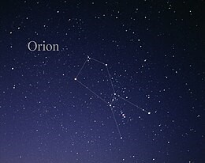
Orion
The Orion constellation is one of the most prominent and recognizable in the night sky, often called "The Hunter" due to its shape.

Ursa Major
Ursa Major, or "The Great Bear," is a well-known constellation that contains the famous Big Dipper asterism.

Ursa Minor
Ursa Minor, or "The Little Bear," includes the Little Dipper, with the North Star, Polaris, marking the end of its tail.
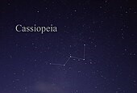
Cassiopeia
Cassiopeia is easily identified by its "W" shape and is known as the Queen in Greek mythology.
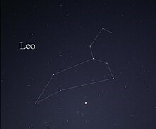
Leo
Leo represents a lion and is a prominent constellation in the zodiac, known for its bright star, Regulus.
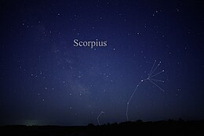
Scorpius
Scorpius is a zodiac constellation known for its distinctive shape, representing a scorpion.
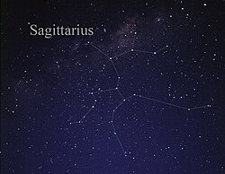
Sagittarius
Sagittarius is a constellation associated with the archer and is one of the zodiac signs.
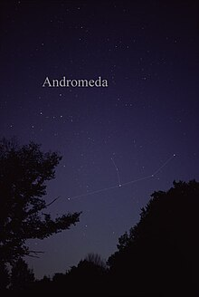
Andromeda
The Andromeda constellation is associated with the Greek myth of a princess chained to a rock, representing the Andromeda Galaxy.